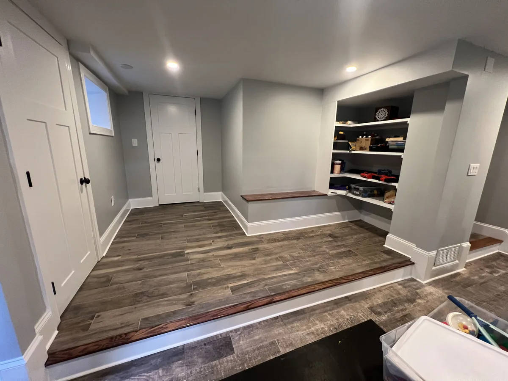

Basement finishing contractors in Massachusetts
Basement finishing contractors in Massachusetts, from moisture check to move-in
Basement finishing contractors at DeFaria Construction turn an unfinished or dated basement into dry, warm, code-ready living space. One owner-led team handles moisture, framing, insulation, egress, drywall and finish across Essex and Middlesex County.
Our work
From open framing to a finished, insulated room
Watch one of our conversions go from bare studs and rafters to an insulated, drywalled and painted room. A basement follows the same sequence, with moisture control added first.
Get a Free Estimate
The short answer
What do basement finishing contractors actually do?

Basement finishing contractors turn the raw space under your house into permitted, comfortable living space. That means checking and controlling moisture, framing and insulating the walls, running electrical, heat and sometimes plumbing, closing in walls and ceilings, and finishing floors, trim, doors and paint so the basement feels like the rest of the home.
- A moisture and foundation check before anything is built.
- Framing, insulation and air sealing against the foundation.
- Electrical, lighting, heat and, if needed, a bathroom or wet bar.
- Egress windows for bedrooms, plus smoke and carbon monoxide alarms.
- Drywall, ceilings, flooring, trim, doors, built-ins and paint.
- Permits, inspections and licensed electricians and plumbers.
DeFaria runs all of it as one project with one point of contact, so you are not coordinating five different trades in your own basement.
Cost
How much does it cost to finish a basement in Massachusetts?

In Essex and Middlesex County most basement finishing projects land between about $35 and $90 per square foot. For a typical 700 to 900 square foot basement that is roughly $30,000 to $75,000. The spread comes from what the basement needs before the fun part starts and how much you add on top.
| Scope | Typical 2026 range | What drives it |
|---|---|---|
| Open family room or office | $25,000 to $45,000 | Size, ceiling type, flooring |
| Family room plus half bath | $40,000 to $65,000 | Plumbing below the floor, ejector pump |
| Suite with bedroom and full bath | $55,000 to $90,000 | Egress window, full bath, more walls |
| Moisture work before framing | $3,000 to $15,000 | Drainage, sump, cracks, grading |
| Built-ins, bar, theater upgrades | $5,000 to $25,000+ | Custom carpentry and finishes |
These are typical market ranges for our area, not a quote. Older fieldstone foundations, low ceilings with ducts in the way, and a bathroom far from the main stack add cost. A dry poured basement with good height and the main panel nearby keeps it lower.
For the full breakdown line by line, read our basement finishing cost guide for Massachusetts.
Moisture
Moisture first: how we keep a Massachusetts basement dry

Water is the reason most finished basements fail. Before we frame a single wall, we look at how water gets to the foundation and what the basement does after a heavy rain or a spring thaw.
- Grading, gutters and downspouts that send water away from the house.
- Cracks, old window wells and penetrations in the foundation.
- An existing sump pump, or the need for one, plus a backup.
- Relative humidity, with a dehumidifier sized for the space.
- A radon test, since many New England homes benefit from mitigation before a basement becomes living space.
Many North Shore homes sit on old fieldstone or block foundations that breathe moisture by design. Those can be finished well, but they need a different wall assembly than a newer poured foundation. If a basement has an active water problem, we fix that first and price it openly, because covering a wet wall with new drywall only hides the problem.
Insulation
Insulation and walls: the layer that makes a basement warm

A basement only feels like the rest of the house if the walls are insulated the right way. Fiberglass batts pressed against cold concrete trap moisture and grow mold, so we start with rigid foam board against the foundation, seal the seams, and frame inside it.
The Massachusetts energy code for our climate zone calls for basement walls insulated to roughly R-15 of continuous insulation or R-19 in the wall cavity. Foam has to be covered with a code-approved thermal barrier, usually half-inch drywall, and we fire-block the framing where the code requires it. The rim joist, where the house sits on the foundation, is one of the leakiest spots in older homes, so we seal and insulate it too.
Insulation and drywall are core work for us, not a sub-trade. See how we handle them on our insulation and drywall contractors page.
Ceilings
Ceiling height, beams and ducts: the 7-foot rule
Habitable basement space generally needs a finished ceiling height of about 7 feet, with some allowance for beams and ducts that hang lower. Many older North Shore basements sit right at that line once a ceiling goes in, so we measure before we design.
- Drywall ceilings look the cleanest and give the most height.
- Soffits box in ducts and beams neatly along one wall instead of across the room.
- Painted open joists, like the basement in our photos, keep every inch of height and give a loft look.
- Drop ceilings keep plumbing and shutoffs accessible, at the cost of a little height.
We plan the ceiling, the lighting and any duct changes together, so the room feels open instead of crowded overhead.
Egress and safety
Egress windows and basement bedrooms in Massachusetts
Any basement bedroom needs an emergency escape and rescue opening. Under the building code Massachusetts uses, that means a window with at least 5.7 square feet of clear opening, at least 20 inches wide and 24 inches high, with the sill no more than 44 inches above the floor, plus a window well large enough to climb out of.
- Cutting the foundation and installing a code-size egress window and well.
- Smoke alarms and carbon monoxide alarms where the code requires them.
- Safe stairs with handrails and proper lighting.
- Fire blocking and a protected path out of the basement.
If you plan a guest room, an in-law space or a teenager's room downstairs, tell us at the walkthrough. Egress is much easier to design in at the start than to add later.
Permits
Permits, inspections and licensed trades
Turning a basement into living space is regulated work under the Massachusetts State Building Code. Expect a building permit from your town, an electrical permit pulled by a licensed electrician, and a plumbing permit by a licensed plumber if water or drains are involved. Inspectors look at framing, insulation, wiring and plumbing before the walls close, then sign off at the end.
DeFaria pulls the permits and schedules the inspections with your town building department, so the work is on record. That matters for your insurance and for an appraisal or sale later. Before you hire anyone, ask to see their Massachusetts Home Improvement Contractor registration and who will pull each permit.
Real DeFaria basements
Finished basements we built, not stock photos
Two completed DeFaria basements: an open lower level with painted beams, wood-look flooring and a built-in niche under the stairs, and a home gym with chair rail, recessed lights and daylight windows. Clean framing, drywall and trim that turn a lower level into a room the family actually uses.


Ideas
Popular ways to use a finished basement

The best basements are planned around one or two clear uses. Here is what families ask us for most:
- A family room or home theater with good lighting and sound control.
- A home office with a door that closes and a window for daylight.
- A home gym with durable flooring and extra outlets.
- A guest suite or in-law space with a bedroom, egress and a bathroom.
- A playroom with built-in storage that keeps toys out of the way.
- A wet bar or a second kitchenette for entertaining.
- Organized storage and laundry kept separate from the living area.
Built-in shelves, benches and closets make a basement feel finished and solve storage at the same time. That is where our finish carpentry and built-ins come in.
Finishes
Flooring, lighting and finishes that work below grade

Below-grade floors need materials that shrug off a little humidity. Luxury vinyl plank is our most common choice: it is waterproof, warm underfoot over a proper underlayment and looks like wood. Engineered wood and carpet tiles work in drier basements. We avoid solid hardwood on concrete.
- Luxury vinyl plank or tile over a moisture-tolerant underlayment.
- Recessed LED lighting on dimmers, planned around the ceiling layout.
- Mold-resistant drywall in damp-prone areas and around the bathroom.
- Solid-core doors and trim that match the rest of the house.
- Paint selected for low odor and easy cleaning.
Paint and trim are the last thing you see and the first thing guests notice. Our interior painters finish the basement with the same prep as any room upstairs.
Bathrooms
Adding a bathroom or wet bar to the basement
A bathroom turns a basement into a real suite, and it is the single biggest cost decision in the project. If the main drain sits below the new fixtures, the toilet and shower drain by gravity. If not, we use a sewage ejector pump or an up-flush system, which adds cost but avoids breaking much of the slab.
A new basement bathroom usually runs about $25,000 to $55,000 on its own, depending on how much concrete has to be opened and the fixtures you choose. Waterproofing, ventilation to the outside and a mold-resistant wall system are part of every basement bath we build. See how we plan baths on our bathroom remodeling page.
Timeline
How long does basement finishing take?

Most basement finishing projects take about 6 to 10 weeks once the permit is issued. Here is the usual sequence:
- Walkthrough, measurements, moisture check and a fixed, itemized estimate.
- Design and permit application with your town.
- Moisture work, rim joist sealing and any egress cut.
- Framing, foam board insulation and fire blocking.
- Rough electrical, plumbing and heating, then inspections.
- Drywall, ceilings and mud, followed by primer.
- Flooring, doors, trim, built-ins and paint.
- Final inspection and a walkthrough with you before sign-off.
You get updates at each stage, and the work area is cleaned at the end of every day, which matters when people are living upstairs.
Value
Is finishing a basement worth the money?
For most families, yes. A finished basement adds usable square footage for a fraction of what an addition costs, because the foundation, roof and exterior walls already exist. Per square foot, finishing a basement usually costs far less than building out with a home addition.
Buyers on the North Shore notice a dry, permitted, well-lit basement, and appraisers treat permitted living space very differently from a damp storage area. The return depends on doing it right: moisture control, proper insulation and permits are what make it count.
Timing
Why fall and winter are a smart time to finish a basement
Searches for basement finishing contractors in Massachusetts peak in September and October, and there is a reason. Basement work is indoors, so cold weather and snow rarely slow it down, and booking in the fall usually means the room is ready for the holidays or by spring.
It also fits how most families plan the year: decks, siding and additions in the warm months, the basement in the cold ones. If you want a finished basement by spring, the time to get the estimate and the permit moving is now.
Choosing a contractor
How to choose a basement finishing contractor
Before you sign with anyone, ask these questions. A good basement contractor answers all of them without hesitation.
- How will you check and handle moisture before framing?
- What insulation goes directly against the foundation walls?
- Who pulls the building, electrical and plumbing permits?
- Are the electricians and plumbers licensed in Massachusetts?
- Is the price fixed and itemized, or an estimate that can grow?
- Can I see photos of basements you finished and read real reviews?
- Who is my contact day to day, and how often will I get updates?
At DeFaria the answer to the last one is simple: Luiz DeFaria, the owner, leads the project himself.
Reviews
What homeowners say about DeFaria Construction
DeFaria Construction has a 5.0 rating from 15 reviews on Google. See all reviews on Google.
We used DeFaria Construction twice, once for a gut remodel of a condo unit and the other for a basement and garage upgrade. They are very professional, reasonably priced, do a great job, stick to their timelines and leave the work area totally clean at the end of every day. I highly recommend Luiz…
Luiz has done many projects, from major renovations to minor repairs, for us in multiple homes over the last ten years. He and his company always do excellent and timely work. I would recommend him any time.
Very professional, efficient and thorough. They are extremely attentive to details and are fast-paced. Best contractor I’ve worked with!
FAQ
Basement finishing questions homeowners ask
How much does it cost to finish a basement in Massachusetts?
Most basements we scope in Essex and Middlesex County land between about $35 and $90 per square foot, so a typical 700 to 900 square foot basement runs roughly $30,000 to $75,000. Moisture work, a bathroom, an egress window or a high-end finish push it higher. You get a fixed, itemized number at the walkthrough.
Is it illegal to finish a basement without a permit in Massachusetts?
Finishing a basement into living space is building work under the Massachusetts State Building Code, so it needs a building permit, and electrical and plumbing work need their own permits pulled by licensed trades. Unpermitted work can cause trouble with insurance, inspections and a future sale. DeFaria pulls the permits as part of the job.
How do I choose a basement finishing contractor?
Ask how they handle moisture before framing, what insulation goes against the foundation, who pulls the permits, whether licensed electricians and plumbers do that work, and whether the price is fixed and itemized. Ask for photos of finished basements and real reviews. A good contractor answers all of that before you sign.
What time of year is best to finish a basement?
Fall and winter are a smart time in Massachusetts. Basement work is indoors, so weather rarely stops it, and planning in September or October usually means the room is ready for the holidays or for spring. Many homeowners book exterior projects for the warm months and the basement for the cold ones.
How long does it take to finish a basement?
Most basement finishing projects take about 6 to 10 weeks once permits are issued. A simple open family room is on the shorter end; a basement with a bathroom, a bedroom with egress or moisture repairs takes longer. The schedule is set out phase by phase in the estimate.
Do I need an egress window to finish my basement?
You need an emergency escape opening for any basement bedroom, and the code sets its minimum size and sill height. A family room, office or gym without a sleeping room usually does not need one, but the stairway and smoke and carbon monoxide alarms still have to meet code. We check this at the walkthrough.
Can you finish a basement that sometimes gets water?
Only after the water problem is solved. We look at grading, gutters, cracks, the sump and humidity first, and price any waterproofing or drainage separately and openly. Framing over a wet wall just hides the problem behind new drywall.
Is DeFaria Construction licensed and insured?
Yes. DeFaria Construction (DeFaria Carpentry, Inc.) is licensed and insured, BBB Accredited with an A+ rating, and every basement is owner-led by Luiz DeFaria from the first walkthrough to the final one.
Who does the work
Owner-led basement finishing from a local North Shore builder

DeFaria Construction is the trade name of DeFaria Carpentry, Inc., a Lynn-based, licensed and insured contractor in business since 2015 and BBB Accredited with an A+ rating. One longtime client wrote on Google that Luiz has been doing construction for their family for close to 20 years.
On a basement that experience shows up in the parts you will never see: the foam against the foundation, the sealed rim joist, the fire blocking, the egress well that drains. We finished a basement and garage upgrade for one Google reviewer and kept the work area clean at the end of every day, and that is the standard on every lower level we build.
Request a Free Estimate Call (617) 893-2221